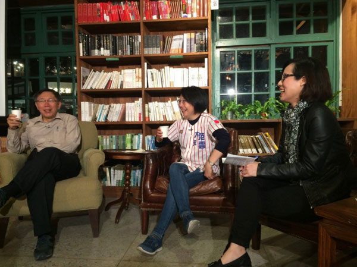
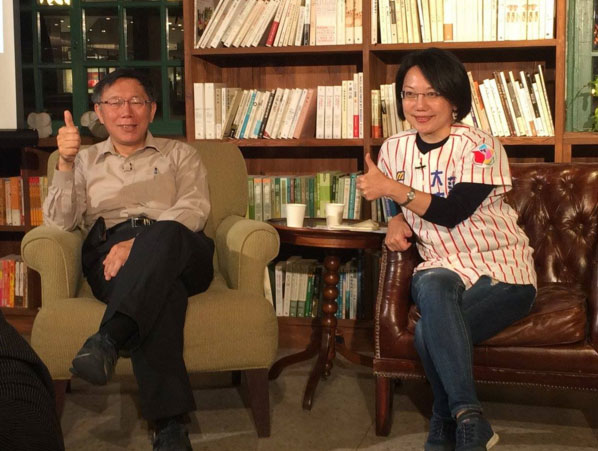

市政忙碌的柯文哲也關心國會選舉！
抓緊時間先在辦公室踩腳踏車運動一小時之後，約莫九點半，風塵僕僕的趕來閱樂書店，準備今晚的座談會。一站上台，他俐落的將夾式麥克風穿進自己的卡其杏襯衫，像幾百次熟練一般，坐定，抓頭，托腮。
這一系列由首都改革陣線主辦、《BuzzOrange》總編輯張育寧主持的「深夜柯文哲，夜問新國會」座談，邀請台北市長柯文哲與台北市八個選區的立委候選人，討論新國會的改革，以及日後在中央的國會立委如何與台北市政府合作，範圍包括台北市高房價的居住議題、老人照護社區空間使用，以及醫療中心等等。
坐在柯文哲左手邊的，是這次代表綠黨社會民主黨聯盟參選大安區立委的范雲，身上穿著繡有社會民主黨黨徽的棒球球衣，開門見山就提起柯文哲在座談前一天說「范雲沒有魅力」一事，並問道「柯市長，你覺得我應該怎麼樣做，才能像你一樣有魅力呢？」
在柯文哲回答之前，身為台大社會系副教授的范雲先向柯文哲解釋，「社會學家韋伯 (Weber) 說權威分成三種，一種是傳統型，像是（民國黨）妙天，二是法理型，像是馬英九總統，三是魅力型 (Charisma)，像是蔡依林、周杰倫，是吧？他們都很有魅力啊，叫我們去做什麼我們都願意，柯市長也是啊，很有魅力。」柯文哲點頭稱是，笑著說：「Charisma 的確很重要，像我從小到大都很有魅力。」
范雲之所以這樣問，是因為她的對手蔣乃辛在「天龍重鎮」大安區經營超過三十年，這一場選戰無論是在資源、知名度，范雲打得異常辛苦，花在介紹自己的時間比講述政見還多。
范雲感嘆，台灣的區域立委大多時間花在基層選民服務，而非研究法案，「原先是里長、議員該做的事，現在卻都讓立委做，這樣不是挺失職的嗎？」柯文哲的回答也很直接，「選民服務很好笑！立法委員跑紅白帖也只是為了別人的面子。」他說台灣政府時常花時間做冗事、做無意義的事，「我們選的是立法委員，不是關說委員。」
這場座談的主題之一是「國會改革」，范雲希望進入立法院推動修憲，建立「公費選舉」的制度，「德國的年輕人願意投身政治領域，就是因為國家願意提供公共的資源來幫助候選人」，讓多數候選人的政治獻金並非來自財團，另外，對政治有熱情的年輕人也不會因為參選的經濟門檻而放棄。范雲說：「德國的政府會有一個公共的空間，讓所有的候選人放置看板、政見，反觀我們大安區寸土寸金，我連買一塊看板都很難，所以我到處問支持者，陽台能不能讓我們掛旗，我總是開玩笑說，掛一條我的宣傳旗，就像是捐給我一萬塊。」
柯文哲（托腮 x1）認為談公費選舉或許還有點太遠，畢竟是一個很大的改革進程，他認為政府光是在檢閱候選人的政治獻金狀況，執行面就出了很大的紕漏，何況談及公費選舉？柯文哲以自己一年前的台北市長選舉為例，說監察院在查閱他與連勝文的政治獻金時，連勝文的募款經費比他少，競選支出也比他少，「你覺得這樣監察院還需要報帳嗎？報假的啊，這樣我還需要誠實報帳嗎？」柯文哲甚至激動拍了一下自己的膝蓋，示意這是用膝蓋想也知道的事情。
柯文哲進一步再問范雲，除了公費選舉制度外，還有什麼是她想改變的，「你知道，我對國會是很不滿的。」（托腮 x2）
范雲說，她認為應要增加不分區立委的席次，並且降低小黨的參政門檻，以及訂定國會的協商制度，「什麼樣議題能協商、什麼議題不能協商，必須要有明文的規定。」柯文哲（托腮 x3）回應，「這理念很好，只是要怎麼執行？」范雲笑稱：「所以我們才說，要把進步的力量送進國會。」
主持人接著提問，有了新國會之後，柯市長與台北市的立委打算在什麼政策上合作呢？
柯文哲馬上問范雲對於居住正義、公共住宅的看法。范雲認為，除了公共住宅外，首要處理的仍是台北市多空屋的問題，「居住權益是我們許多人，尤其是年輕人非常關切的議題，五萬戶的公共住宅當然很好，但是如果還能再處理台北市 8% 的空屋率，讓這個城市裡工作的年輕人有品質的生活，這也是另個面向。」
范雲提到，希望台北市政府能建立一個租屋平台，讓這些空屋被有效利用，協助房東與承租人的媒合，也能解決居住正義，「當然這也和我們的稅制有關，許多房東不願意租屋是因為，多了這些收入還要被加稅，因此，未來有沒有可能改變這裡的稅制，讓房東租屋給年輕人的時候，甚至是減一點稅，因為他們提供了一個好的居住環境給年輕人。」
柯文哲回答，處理空屋率就能增加八萬戶的居住人口，是一個很好的想法，只是如何進入立法程序 (How to do)、空屋如何進入房市，國會還需要更多時間商討，畢竟台北市依然是執行單位。
范雲再追問柯文哲，「我還是覺得你之前在房屋政策上，太快妥協了，關於你說『房地產是火車頭產業』這件事。」柯文哲則回應，「我都是先出一張牌，看大家能不能接受，或是提出更好的意見。」
談起素人參政的拜票經驗，范雲說，在大安森林公園跑行程時，常常有居民跟她說，「你可以幫我跟柯文哲反映嗎？」代表柯文哲的新市政都讓市民們開始關心自己身邊的公共事務與生活。
范雲笑稱最常聽見的抱怨，就是柯文哲即將取消重陽敬老津貼，「我覺得柯市長其實非常有勇氣做這樣的政策選擇，因為我其實之前很常講，我將來要在立法院做的，就是年金改革。」
柯文哲一聽，馬上追問范雲，「所以你支持取消重陽敬老津貼嗎？」范雲正面肯定這項政策，「但是因為津貼取消之後，並沒有相關配套措施，所以大家對於少了這份重陽補貼才會有這麼大的反彈。」
柯文哲自信的說，這個政策選擇會讓大家看清楚「你到底是政客還是政治家」，他進一步解釋，今 (2015) 年一月做的人口調查，台北市超過 65 歲的人口已經超過 14%，高齡化現象非常嚴重；再過五年、十年，台北市的人口一定會迅速老化，與其依靠津貼，倒不如把這筆錢用於老人照護與醫療中心。
范雲也認同這樣的想法，並主張老人照護的制度需要中央的配合，「像是大安區內有些地方是很適合當作老人社區照護中心，比方說美國在台協會（AIT）要遷出、仁愛路的空總基地，或是國防部在六張犁的軍火檢修場等等，這些空間若是能妥善運用，柯市長與國會相互配合，我相信我們台北市能成為台灣銀髮族的典範城市。」
范雲把握座談所剩的最後時間追問柯文哲：「市長，你還沒告訴我如何增加群眾魅力的要訣是什麼欸？」
柯文哲回答（托腮 x4），「嗯，獅子生下來就是獅子。」范雲大驚，「這！這你的意思是說只有你生下來是獅子嗎？」柯文哲再抓頭說：「群眾魅力是真的蠻困難的，而且還有一個特質啦，我一直都不知道要怎麼去形容，到底是勇氣，還是信念，還是亞斯伯格，我也不知道！」范雲笑稱，「亞斯伯格」這部分她應該沒辦法，剩下能做的，她會繼續努力。